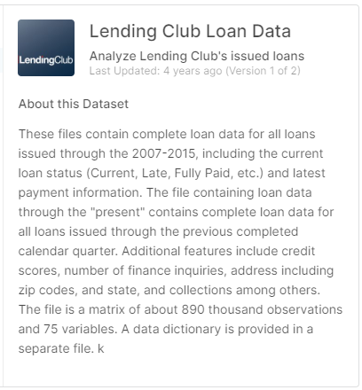
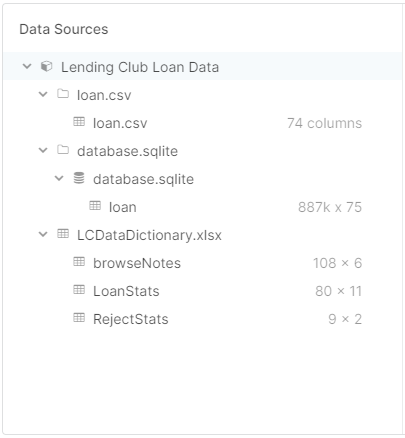
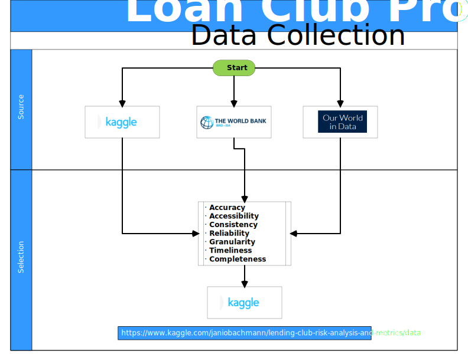

Loan Data 2011 - 2015
Extraction of the Loan data from the Kaggle website
https://www.kaggle.com/janiobachmann/lending-club-risk-analysis-and-metrics/data

Data Sources. csv sqlite.
the sources were presented in two type of document loan.csv and database.sqlite. Additional document LCDataDictionary.xlsx describes the columns content.

Data Gathering.
The data flow diagram (DFD) ilustrate how the data gathering process and selection.

Dataset Info.
Data sources were presented in two type of document loan.csv and database.sqlite. Additional document LCDataDictionary.xlsx describes the columns content.
| Number of variables | 55 |
|---|---|
| Number of observations | 21,721 |
| Total size in memory | 4.04 MiB |
Variables types
| Numeric Integer | 36 |
|---|---|
| Numeric Float | 19 |
| Boolean | 0 |
| Date | 0 |
| Text (Unique) | 0 |
| Object | 1 |
Variables List and Description.
| LoanStatNew | Description |
|---|---|
| annual_inc | The self-reported annual income provided by the borrower during registration. |
| collection_recovery_fee | post charge off collection fee |
| collections_12_mths_ex_med | Number of collections in 12 months excluding medical collections |
| delinq_2yrs | The number of 30+ days past-due incidences of delinquency in the borrower's credit file for the past 2 years |
| dti | A ratio calculated using the borrower’s total monthly debt payments on the total debt obligations, excluding mortgage and the requested LC loan, divided by the borrower’s self-reported monthly income. |
| emp__< 1 year | Employment length less 1 year |
| emp__1 year | Employment length 1 year. |
| emp__10+ years | Employment length more than 10 year. |
| emp__2 years | Employment length 2 year. |
| emp__3 years | Employment length 3 year. |
| emp__4 years | Employment length 4 year. |
| emp__5 years | Employment length 5 year. |
| emp__6 years | Employment length 6 year. |
| emp__7 years | Employment length 7 year. |
| emp__8 years | Employment length 8 year. |
| emp__9 years | Employment length 9 year. |
| funded_amnt | The total amount committed to that loan at that point in time. |
| funded_amnt_inv | The total amount committed by investors for that loan at that point in time. |
| grade_A | LC assigned loan grade A |
| grade_B | LC assigned loan grade B |
| grade_C | LC assigned loan grade C |
| grade_D | LC assigned loan grade D |
| grade_E | LC assigned loan grade E |
| grade_F | LC assigned loan grade F |
| grade_G | LC assigned loan grade G |
| ho__MORTGAGE | The home ownership MORTGAGE status provided by the borrower during registration |
| ho__OTHER | The home ownership OTHER status provided by the borrower during registration |
| ho__OWN | The home ownership OWN status provided by the borrower during registration |
| ho__RENT | The home ownership RENT status provided by the borrower during registration |
| inq_last_6mths | The number of inquiries in past 6 months (excluding auto and mortgage inquiries) |
| installment | The monthly payment owed by the borrower if the loan originates. |
| int_rate | Interest Rate on the loan |
| last_pymnt_amnt | Last total payment amount received |
| loan_amnt | The listed amount of the loan applied for by the borrower. If at some point in time, the credit department reduces the loan amount, then it will be reflected in this value. |
| loan_status | Current status of the loan |
| mths_since_last_delinq | The number of months since the borrower's last delinquency. |
| mths_since_last_major_derog | Months since most recent 90-day or worse rating |
| mths_since_last_record | The number of months since the last public record. |
| open_acc | The number of open credit lines in the borrower's credit file. |
| out_prncp | Remaining outstanding principal for total amount funded |
| out_prncp_inv | Remaining outstanding principal for portion of total amount funded by investors |
| policy_code | publicly available policy_code=1\nnew products not publicly available policy_code=2 |
| pub_rec | Number of derogatory public records |
| recoveries | post charge off gross recovery |
| revol_bal | Total credit revolving balance |
| revol_util | Revolving line utilization rate, or the amount of credit the borrower is using relative to all available revolving credit. |
| term_ 60 months | The number of payments on the loan of 60 months. |
| total_acc | The total number of credit lines currently in the borrower's credit file |
| total_pymnt | Payments received to date for total amount funded |
| total_pymnt_inv | Payments received to date for portion of total amount funded by investors |
| total_rec_int | Interest received to date |
| total_rec_late_fee | Late fees received to date |
| total_rec_prncp | Principal received to date |
| ver__Not Verified | Indicates if the co-borrowers' joint income was not verified by LC |
| ver__Source Verified | Indicates if the co-borrowers' joint income source was verified by LC |
| ver__Verified | Indicates if the co-borrowers' joint income was verified by LC |